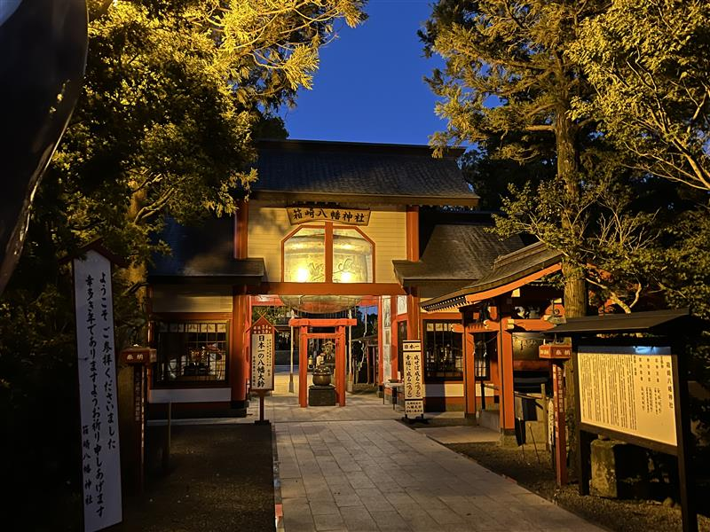
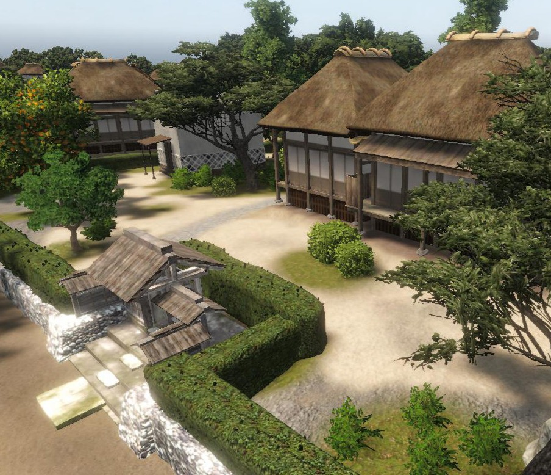

HOME
地元
趣味
行きたい国
好きな季節
高校生活
地元の紹介
鹿児島県出水市
鶴
出水には、毎年１０月中旬から１２月ごろにかけて、１万羽を超える鶴が渡来します。
その数と種類の多さは日本一と言われており、「鹿児島県のツル及びその渡来地」として国の特別天然記念物にも指定されています。
箱崎八幡神社
「成せば成(鳴)る大願成就の大鈴」があることで有名。
大きさは、高さ4m、直径3.4m、重さ5トンあり、鶴の里出水ならではの鶴の親子の舞いを浮き彫りにした日本一の大鈴があります。

出水麓武家屋敷群
江戸時代の武士の住まいが残る歴史地区です。
国の「重要伝統的建造物群保存地区」に指定されています。
伝統的な屋敷が公開されていて、当時の暮らしを体感することができます。
